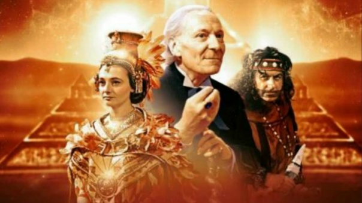
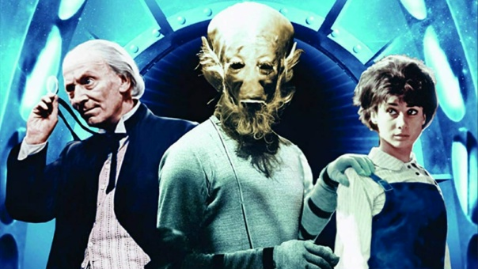

Первое появление Доктора, Сьюзан, Йена, Барбары, ТАРДИС и школы Коал-Хилл. Первый эпизод происходит в Лондоне 1963 года, а остальные три объединяет сюжет о пещерных людях и создании огня.
🔽 1 сезон 🔽 (1963-1964) 42 эпизода, объединённых в 8 серий
В 1 сезоне сериал старался сохранить баланс между историческими и научно-фантастическими историями, которые чередуются.
Первое появление Доктора, Сьюзан, Йена, Барбары, ТАРДИС и школы Коал-Хилл. Первый эпизод происходит в Лондоне 1963 года, а остальные три объединяет сюжет о пещерных людях и создании огня. |
 Сюжет полностью происходит внутри ТАРДИС, и в серии никто не появляется кроме четырёх основных персонажей. |
 Первый сюжет, развивающийся вокруг исторической фигуры - Марко Поло. Историческая серия, действие которой происходит в Китае XIII века. СМОТРЕТЬ 4 СЕРИЮ |
 Первое и единственное появление вурдов в сериале. Сюжет представляет из себя квест по разным уголкам инопланетного мира. СМОТРЕТЬ 5 СЕРИЮ |
 Историческая серия, действие которой развивается в империи ацтеков до прибытия европейцев. Здесь впервые представлена концепция изменения истории. СМОТРЕТЬ 6 СЕРИЮ |
 Первое и единственное появление сенсоритов в сериале. Первая серия, действие которой происходит в будущем. СМОТРЕТЬ 7 СЕРИЮ |
Историческая серия, сюжет которой происходит в Революционной Франции. |